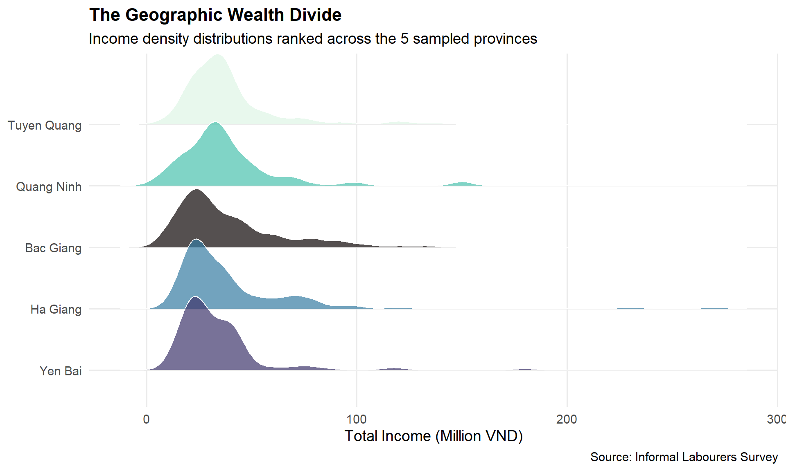
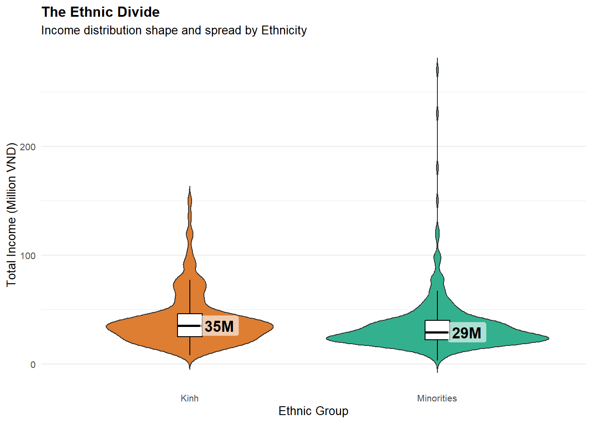
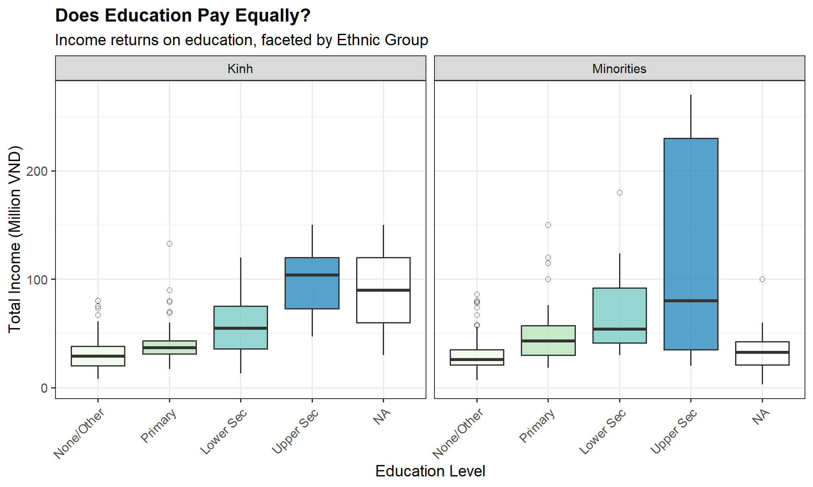
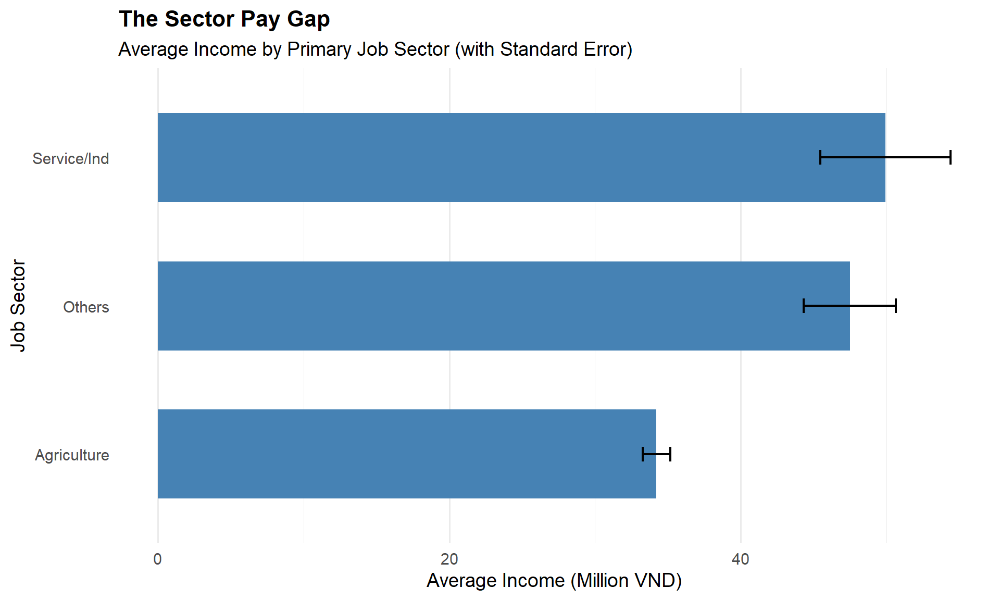
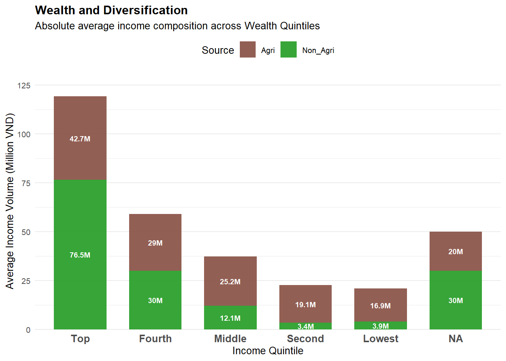
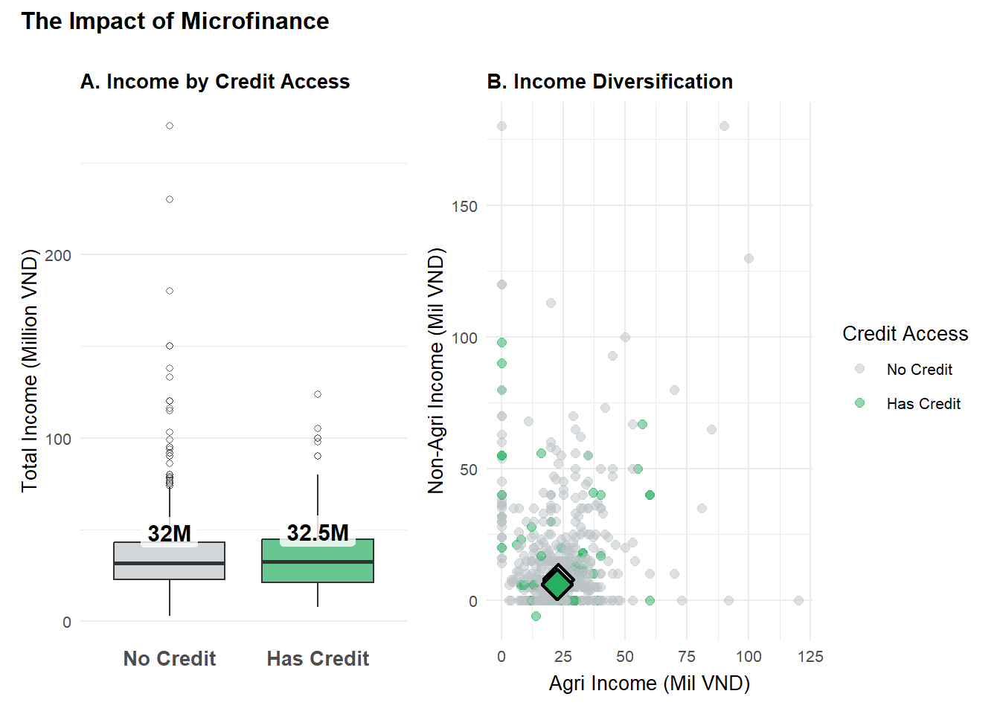

Show code
pacman::p_load(tidyverse, ggthemes, patchwork, knitr, ggridges, ggtext, readxl) Figure 1. Buddha, Lao Tzu, and Confucius
Figure 1. Buddha, Lao Tzu, and Confucius
(Source: Smithsonian)
Throughout the long and often turbulent history of Vietnam, society has been shaped by the philosophical convergence commonly described as “Tam Giáo Đồng Nguyên” (The Three Teachings - 三教同源): the blending of Confucianism, Buddhism, and Taoism. These traditions did not merely guide spiritual life; they profoundly influenced social expectations, economic roles, and the perceived hierarchy of labor within a largely agrarian civilization.
One of the most enduring frameworks to emerge from this worldview was the concept of “Tứ Dân” (The Four Occupations - 士農工商): “Sĩ, Nông, Công, Thương”. Scholar-officials (士) occupied the highest rung, entrusted with governance and moral leadership. Farmers (农) formed the backbone of the nation, sustaining both economy and culture. Artisans (工) represented skilled productivity, while merchants (商), despite their economic importance, often occupied an ambiguous moral position due to Confucian skepticism toward profit-driven pursuits.
Although Vietnam officially transitioned away from feudal structures in the twentieth century, culminating in national independence in 1945 and ultimate reunification in 1975, the social logic embedded within these historical classifications did not disappear overnight. Instead, they evolved into modern forms: education remains a gateway to upward mobility reminiscent of the scholar class; agriculture continues as both a cultural foundation and a persistent economic constraint; artisanal skills have transformed into small-scale informal industries; and trade and service work occupy a shifting space between opportunity and precarity.
In rural and mountainous regions, where geography, ethnic diversity, and uneven development intersect, these historical echoes still influence economic outcomes. Modern laborers are no longer bound by imperial exams or rigid caste-like roles, yet structural legacies remain visible through educational disparities, occupational segregation, and unequal access to markets and capital.
This report begins from that historical consciousness. The data analysis presented here is not simply an analysis of numbers; it is a contemporary reflection of how centuries-old social patterns continue to shape livelihoods. By examining income structures, employment sectors, and demographic characteristics among informal rural workers, I attempt to understand whether Vietnam has truly moved beyond the legacy of the old occupations, or whether those ancient divisions still cast long shadows over modern economic mobility.
In this analysis, titled “Beyond the Harvest: What the Fields Do Not Yield,” I adopt the lens of a socio-economic analyst examining the livelihoods of informal laborers in Vietnam’s Northern Mountainous Region. Using a dataset of 725 rural workers, this report moves beyond simple descriptive statistics to uncover the structural “ceilings” and “floors” of rural income.
I will examine how education, gender, and ethnicity interact to shape economic destiny in these developing provinces, aiming to tell a truthful and enlightening story about the barriers to upward mobility.

Figure 2. Rice fields in Northern Vietnam
(Source: Travel Sense Asia)
We will use the tidyverse family for data processing and ggplot2 (along with ggthemes and patchwork) for the visualisations.
pacman::p_load(tidyverse, ggthemes, patchwork, knitr, ggridges, ggtext, readxl)The dataset comes from a survey of informal laborers in rural areas of northern Vietnam. I have attained this data as per the research paper’s requirement.
It can be found on Mendeley Data.
# Load the dataset
raw_data <- read_excel("data/Upload for elsiver.xlsx")
glimpse(raw_data)Rows: 725
Columns: 30
$ CPRO <dbl> 1, 1, 1, 1, 1, 1, 1, 1, 1, 1, 1, 1, 1, 1, 1, 1, 1, 1, 1, 1, 1, 1,…
$ CGEN <chr> "1", "1", "2", "1", "2", "2", "1", "1", "1", "1", "1", "2", "2", …
$ CRAC <dbl> 2, 2, 2, 2, 2, 2, 2, 2, 2, 2, 2, 1, 1, 2, 2, 2, 1, 1, 1, 1, 1, 1,…
$ CJOB <dbl> 1, 1, 3, 1, 1, NA, 3, 1, 3, 1, 1, 1, 2, 1, NA, 2, 1, 1, 1, 1, 1, …
$ CQUI <dbl> 3, 5, 3, 3, 3, 4, 1, 3, 3, 3, 3, 3, 2, 3, 5, 1, 2, 2, 2, 2, 2, 2,…
$ TEIN <dbl> 37, 25, 33, 35, 36, 21, 35, 36, 38, 30, 58, 24, 32, 11, 22, 95, 4…
$ TAIN <dbl> 25, 22, 25, 30, 28, 17, 25, 28, 26, 22, 40, 24, 23, 11, 20, 30, 3…
$ TSII <dbl> 7, 0, 0, 5, 0, 0, 0, 0, 12, 2, 0, 0, 0, 0, 0, 50, 17, 10, 12, 15,…
$ TOIN <dbl> 5, 3, 8, 0, 8, 4, 10, 8, 0, 6, 18, 0, 9, 0, 2, 15, 0, 0, 0, 0, 16…
$ FEDU <dbl> 1, 0, 1, 1, 0, 0, 3, 0, 2, 0, 0, 0, 0, 0, 0, 2, 1, 2, 2, 2, 2, 2,…
$ FVTP <dbl> 1, 1, 1, 1, 1, 1, 2, 1, 2, 1, 1, 1, 1, 1, 1, 2, 1, 2, 2, 2, 2, 2,…
$ FCRA <dbl> 1, 2, 1, 1, 1, 1, 1, 1, 1, 1, 1, 1, 1, 1, 1, 1, 1, 1, 1, 1, 1, 1,…
$ FTAP <dbl> 1, 1, 2, NA, 2, 2, 2, 2, 2, 2, 2, NA, NA, 2, NA, 2, NA, 2, NA, NA…
$ LHO1 <dbl> NA, 1, NA, 1, NA, NA, NA, NA, NA, NA, NA, NA, NA, NA, 1, NA, NA, …
$ LHO2 <dbl> 1, NA, NA, NA, 1, 1, NA, 1, 1, 1, 1, 1, NA, 1, NA, NA, NA, NA, NA…
$ LHO3 <dbl> NA, NA, NA, NA, NA, NA, 1, NA, NA, NA, NA, NA, 1, NA, NA, 1, 1, 1…
$ LHO4 <dbl> NA, NA, 1, NA, NA, NA, NA, NA, NA, NA, NA, NA, NA, NA, NA, NA, NA…
$ LCRE <dbl> NA, 15, NA, NA, NA, NA, NA, NA, NA, NA, NA, NA, NA, NA, NA, NA, N…
$ LSAV <dbl> 5, NA, 30, NA, NA, 2, 70, NA, 25, 10, 15, NA, NA, 16, NA, 20, NA,…
$ LWDA <dbl> 240, 350, 260, 300, 360, 360, 260, 260, 300, 300, 270, NA, NA, 20…
$ PPO1 <dbl> 5, 2, 5, NA, 5, 2, 5, 5, 4, 5, 4, NA, NA, NA, NA, NA, NA, NA, NA,…
$ PPO2 <dbl> 2, 5, 5, NA, 5, 4, 2, 2, 3, 1, 1, NA, NA, NA, NA, NA, NA, NA, NA,…
$ PPO3 <dbl> 3, 3, 1, NA, 1, 3, 3, 3, 3, 3, 3, NA, NA, 1, NA, 1, NA, 1, NA, 1,…
$ PPO4 <dbl> 1, 1, 1, NA, 1, 1, 2, 2, 2, 2, 2, NA, NA, 3, NA, NA, NA, NA, NA, …
$ PPO5 <dbl> 3, 1, 1, NA, 1, 1, 3, 3, 3, 3, 3, NA, NA, 1, NA, NA, NA, NA, NA, …
$ ARO1 <dbl> 3, 1, 1, NA, 1, 1, 2, 2, 2, 2, 2, NA, NA, NA, NA, NA, NA, NA, NA,…
$ ARO2 <dbl> 1, 1, 1, NA, 1, 1, 1, 1, 1, 2, 1, NA, NA, 2, NA, NA, NA, NA, NA, …
$ ARO3 <dbl> 1, 1, 1, NA, 1, 1, 3, 3, 2, 3, 3, NA, NA, 1, NA, 1, NA, NA, NA, 1…
$ ARO4 <chr> "3", "3", NA, NA, "2", "2", "3", "3", "3", "3", "3", NA, NA, "3",…
$ ARO5 <dbl> 1, 1, 1, NA, 1, 1, 3, 3, 3, 3, 3, NA, NA, 1, NA, NA, NA, NA, NA, …Before analysis, the data must be transformed from raw numerical codes into meaningful categorical factors, as per the research paper’s specifications.
The raw dataset utilizes numerical integers (e.g., 1, 2) to represent categorical variables. To ensure our analysis is readable and our visualization legends are self-explanatory, I will perform the following specific transformations based on the Mai et al. (2021) metadata:
CPRO): Recoded 1-5 \(\rightarrow\) “Tuyen Quang”, “Quang Ninh”, “Ha Giang”, “Yen Bai”, “Bac Giang”.CGEN): Recoded 1 \(\rightarrow\) “Male” and 2 \(\rightarrow\) “Female”.CRAC): Recoded 1 \(\rightarrow\) “Kinh” (the majority ethnic group) and 2 \(\rightarrow\) “Minorities”.CJOB): Recoded 1 \(\rightarrow\) “Agriculture”, 2 \(\rightarrow\) “Service/Ind”, and 3 \(\rightarrow\) “Others”.FEDU): Converted from an integer scale to an ordered factor:
0 \(\rightarrow\) “None/Other”
1 \(\rightarrow\) “Primary”
2 \(\rightarrow\) “Lower Secondary”
3 \(\rightarrow\) “Upper Secondary”
Rationale: This explicit ordering ensures that plots display education levels in their logical progression rather than alphabetically.
CQUI): Converted to an ordered factor: 1 \(\rightarrow\) “Top”, 2 \(\rightarrow\) “Fourth”, 3 \(\rightarrow\) “Middle”, 4 \(\rightarrow\) “Second”, 5 \(\rightarrow\) “Lowest”.FCRA): Recoded 1 \(\rightarrow\) “No Credit” and 2 \(\rightarrow\) “Has Credit”.FVTP): Recoded 1 \(\rightarrow\) “Short Course” and 2 \(\rightarrow\) “Long Course”.clean_data <- raw_data %>%
mutate(
# Demographics
Province = factor(CPRO, levels = 1:5, labels = c("Tuyen Quang", "Quang Ninh", "Ha Giang", "Yen Bai", "Bac Giang")),
Gender = factor(CGEN, levels = c(1, 2), labels = c("Male", "Female")),
Ethnicity = factor(CRAC, levels = c(1, 2), labels = c("Kinh", "Minorities")),
# Economics & Education
Job_Type = factor(CJOB, levels = c(1, 2, 3), labels = c("Agriculture", "Service/Ind", "Others")),
Education = factor(FEDU, levels = c(0, 1, 2, 3), labels = c("None/Other", "Primary", "Lower Sec", "Upper Sec")),
Quintile = factor(CQUI, levels = c(1, 2, 3, 4, 5), labels = c("Top", "Fourth", "Middle", "Second", "Lowest")),
# Interventions
Credit = factor(FCRA, levels = c(1, 2), labels = c("No Credit", "Has Credit")),
Vocational = factor(FVTP, levels = c(1, 2), labels = c("Short Course", "Long Course")),
# Numerics
Income = as.numeric(TEIN),
Agri_Income = as.numeric(TAIN),
Service_Income = as.numeric(TSII),
Other_Income = as.numeric(TOIN)
)If core demographic or income data is missing, the row is unusable for our analysis.
missing_counts <- clean_data %>%
select(Income, Gender, Ethnicity, Job_Type, Province) %>%
summarise_all(~ sum(is.na(.)))
if (sum(missing_counts) > 0) {
cat("⚠️ Missing values detected. Removing incomplete rows...\n")
clean_data <- clean_data %>% drop_na(Income, Gender, Ethnicity, Job_Type, Province)
} else {
cat("✅ No missing values in key columns.\n")
}⚠️ Missing values detected. Removing incomplete rows...A critical step in economic analysis is verifying that “Income” is a positive, non-zero value. In survey data, a value of 0 or negative numbers often indicates:
Missing data: The respondent refused to answer.
Unemployment: The respondent is not actually a “laborer.”
Data entry error.
By definition, our sample consists of “laborers.” Therefore, anyone with an income of 0 or below is likely an entry error or unemployed, which would skew our data.
Action taken: I will filter the dataset to include only rows where Income > 0. This ensures our logarithmic scales (if used) do not break and our averages represent actual earners.
# Check for non-positive income
invalid_income <- clean_data %>% filter(Income <= 0)
if (nrow(invalid_income) > 0) {
cat("⚠️ Found", nrow(invalid_income), "rows with invalid income (<= 0). Removing them from analysis.\n")
clean_data <- clean_data %>% filter(Income > 0)
} else {
cat("✅ Validation passed: All income values are positive (> 0).\n")
}✅ Validation passed: All income values are positive (> 0).A perfectly identical row often indicates a data-entry error where a survey was submitted twice.
dup_count <- sum(duplicated(clean_data))
if (dup_count > 0) {
cat("⚠️ Found", dup_count, "duplicate rows. Removing them...\n")
clean_data <- clean_data %>% distinct()
} else {
cat("✅ No duplicate rows found. Every respondent is unique.\n")
}⚠️ Found 2 duplicate rows. Removing them...We are finally done with cleaning. Below is a snapshot of the clean dataset we will use for the analysis.
# High-level summary of the final clean data
summary_stats <- clean_data %>%
summarise(
total_respondents = n(),
avg_income = mean(Income),
median_income = median(Income),
percent_female = mean(Gender == "Female") * 100
)
# Print summary
print(summary_stats)# A tibble: 1 × 4
total_respondents avg_income median_income percent_female
<int> <dbl> <dbl> <dbl>
1 673 37.6 32 17.4cat(sprintf(
"✅ Final Data Ready: %d respondents.\n Average Income: %.2f Million VND\n Female Representation: %.1f%%",
summary_stats$total_respondents,
summary_stats$avg_income,
summary_stats$percent_female
))✅ Final Data Ready: 673 respondents.
Average Income: 37.63 Million VND
Female Representation: 17.4%The northern mountainous regions of Vietnam are a tapestry of ethnic diversity and agricultural tradition. However, beneath the landscape lies a complex economic reality. The following eight visualizations deconstruct the mechanics of rural income, revealing that while agriculture remains the region’s backbone, it frequently acts as a baseline of subsistence rather than a pathway to prosperity. By examining the data, we uncover how macro-geographical divides, systemic gender segregation in the workforce, and compounding ethnic disparities create steep barriers to economic mobility. More importantly, the analysis identifies the critical escape routes: formal education, occupational diversification, and targeted interventions like microfinance, which together serve as the primary ladders for transforming rural livelihoods.

Figure 3. Rice fields in Northern Vietnam
(Source: Travel Sense Asia)
Technical Approach
I utilized a ridge plot (geom_density_ridges) to evaluate the income distribution across the five provinces.
Visual Rationale
I applied the mako color palette from the viridis package. This provides a striking, colorblind-friendly gradient that visually separates the overlapping ridges. The alpha transparency ensures that peaks in the background remain visible, while gridlines were minimized to keep the focus entirely on the data contours.
ggplot(clean_data, aes(x = Income, y = reorder(Province, Income, FUN = median), fill = Province)) +
geom_density_ridges(alpha = 0.7, color = "white", scale = 1.2) +
scale_fill_viridis_d(option = "mako", direction = -1) +
labs(
title = "The Geographic Wealth Divide",
subtitle = "Income density distributions ranked across the 5 sampled provinces",
x = "Total Income (Million VND)",
y = NULL,
caption = "Source: Informal Labourers Survey"
) +
theme_minimal(base_size = 14) +
theme(legend.position = "none",
panel.grid.minor = element_blank(),
plot.title = element_text(face = "bold", size = 16))
Observation:
Geography plays a foundational role in earning potential. While most provinces cluster around a similar median income of 35-40 Million VND, the shape of their economies differs vastly. Yen Bai trails noticeably behind with a lower median and a highly compressed distribution, indicating widespread baseline poverty with few breakout earners. Conversely, Bac Giang exhibits the longest “right tail.”
This indicates a higher concentration of wealthy outliers, suggesting that macro-level infrastructure or proximity to trade routes heavily dictates the baseline earning potential before individual laborer skills are even considered.
Technical Approach
I utilized a composite layout via the patchwork package to connect a symptom with its cause:
Plot A employs a Density Plot (geom_density) to show the continuous probability distribution of income between genders.
Plot B employs a 100% Stacked Bar Chart (geom_bar(position = "fill")) to show the proportional makeup of job sectors for each gender.
Visual Rationale
For Plot A, transparency (alpha = 0.6) allows the viewer to see exactly where the female distribution is “swallowed” by the male distribution. I used high-contrast Navy and Red for gender to make the distinction immediate. For Plot B, a warm YlOrBr palette differentiates job sectors, creating visual harmony without confusing the colors used for gender.

Figure 4. Rice fields in Northern Vietnam
(Source: Travel Sense Asia)
p1 <- ggplot(clean_data, aes(x = Income, fill = Gender)) +
geom_density(alpha = 0.6, color = NA) +
scale_fill_manual(values = c("Male" = "#2c3e50", "Female" = "#e74c3c")) +
labs(title = "A. Income Distribution by Gender", x = "Total Income (Million VND)", y = "Density") +
theme_minimal() +
theme(legend.position = "top", plot.title = element_text(face = "bold"))
p2 <- ggplot(clean_data, aes(x = Gender, fill = Job_Type)) +
geom_bar(position = "fill", alpha = 0.9) +
scale_fill_brewer(palette = "YlOrBr") +
labs(title = "B. Job Sector Segregation", x = "Gender", y = "Proportion", fill = "Sector") +
scale_y_continuous(labels = scales::percent) +
theme_minimal() +
theme(legend.position = "right", plot.title = element_text(face = "bold"))
p1 + p2 + plot_annotation(
title = "Why do female laborers earn less?",
theme = theme(plot.title = element_text(size = 18, face = "bold"))
)
Observation:
Plot A reveals a clear wage gap: the female income distribution is tightly compressed at the lower end, completely lacking the high-earning “long tail” seen in the male workforce.
Plot B uncovers a primary structural driver for this gap: occupational segregation. A significantly larger proportion of women are confined to the agricultural sector, which yields the lowest average returns.
Meanwhile, men enjoy vastly greater access to the more lucrative Service/Industrial and “Other” sectors, suggesting systemic or cultural barriers prevent women from transitioning into higher-value labor.
Technical Approach
I combined a Violin Plot (geom_violin) with a miniaturized Boxplot (geom_boxplot):
The Violin Plot estimates the probability density, showing exactly where the bulk of the population lives economically.
The inner Boxplot grounds the violin by providing exact statistical markers (the median line and the IQR box).
Visual Rationale
High-contrast colors (Dark Orange for Kinh, Emerald Green for Minorities) were chosen to sharply delineate the two demographics. The violin shape is left un-trimmed (trim = FALSE) to emphasize the long, thin tail of wealthy outliers.
ggplot(clean_data, aes(x = Ethnicity, y = Income, fill = Ethnicity)) +
geom_violin(trim = FALSE, alpha = 0.8) +
geom_boxplot(width = 0.1, fill = "white", color = "black", outlier.shape = NA) +
scale_fill_manual(values = c("Kinh" = "#D55E00", "Minorities" = "#009E73")) +
labs(
title = "The Ethnic Divide",
subtitle = "Income distribution shape and spread by Ethnicity",
x = "Ethnic Group",
y = "Total Income (Million VND)"
) +
theme_minimal(base_size = 14) +
theme(legend.position = "none", plot.title = element_text(face = "bold", size = 16))
Observation:
The violin plot exposes a stark divide. The Ethnic Minority distribution is heavily “bottom-weighted,” indicating the vast majority operate at strict subsistence levels with very little upward variance.
The Kinh majority, while sharing a similar median, displays a fundamentally different shape with a much more evenly distributed profile and a prominent upper tail reaching toward 200+ Million VND.
This implies that systemic barriers—such as language, geographic isolation, or unequal market access—severely restrict economic mobility for minorities, trapping them at the lower end of the income spectrum.
Technical Approach
I utilized a Faceted Boxplot (facet_wrap) to analyze three variables simultaneously (Income, Education, and Ethnicity):
Faceting splits the data into two separate panels, allowing us to see if the “rules” of the economy apply equally to both ethnic groups.
Visual Rationale
I maintained the exact same GnBu sequential palette used in Observation 3.3 for education. Consistency in color coding reduces cognitive load for the reader, allowing them to instantly recognize that darker colors mean higher education across both faceted panels.
ggplot(clean_data, aes(x = Education, y = Income, fill = Education)) +
geom_boxplot(alpha = 0.8, outlier.shape = 1) +
facet_wrap(~ Ethnicity) +
scale_fill_brewer(palette = "GnBu") +
labs(
title = "Does Education Pay Equally?",
subtitle = "Income returns on education, faceted by Ethnic Group",
x = "Education Level",
y = "Total Income (Million VND)"
) +
theme_bw(base_size = 14) +
theme(legend.position = "none",
axis.text.x = element_text(angle = 45, hjust = 1),
plot.title = element_text(face = "bold", size = 16))
Observation:
This faceted chart reveals a compounding structural disadvantage. Not only do ethnic minorities earn less overall, but the “premium” they receive for pursuing higher education is visibly muted compared to the Kinh majority.
A Kinh individual with an Upper Secondary education sees a massive spike in both median earning and potential ceiling (the box stretches high).
However, a Minority individual with the exact same education sees only a modest, compressed increase. This strongly suggests that education alone cannot overcome systemic inequality; hiring biases or localized economic isolation likely play a role.
Technical Approach
I utilized an aggregated Bar Chart (geom_col) enhanced with Error Bars (geom_errorbar):
The data was pre-summarized to calculate the Mean Income and the Standard Error (SE) for each job sector.
The Error Bars visually represent the reliability and volatility of that mean.
Visual Rationale
A single, professional color (steelblue) was used to prevent the chart from looking like a rainbow, keeping the viewer’s focus on the length of the bars and the width of the error margins. I used coord_flip() to ensure the category labels are perfectly horizontal and readable.
job_summary <- clean_data %>%
group_by(Job_Type) %>%
summarise(
Avg_Income = mean(Income),
SE = sd(Income)/sqrt(n())
)
ggplot(job_summary, aes(x = reorder(Job_Type, Avg_Income), y = Avg_Income)) +
geom_col(fill = "steelblue", width = 0.6) +
geom_errorbar(aes(ymin = Avg_Income - SE, ymax = Avg_Income + SE), width = 0.1, linewidth = 0.8) +
coord_flip() +
labs(
title = "The Sector Pay Gap",
subtitle = "Average Income by Primary Job Sector (with Standard Error)",
x = "Job Sector",
y = "Average Income (Million VND)"
) +
theme_minimal(base_size = 14) +
theme(plot.title = element_text(face = "bold", size = 16),
panel.grid.major.y = element_blank())
Observation:
Escaping purely agricultural work is a primary mechanism for poverty alleviation. The Service/Industrial sector provides a substantially higher average income than Agriculture.
However, the wider error bars on the Service and “Other” sectors reflect much higher volatility. These non-agricultural sectors contain both high-paying enterprises and low-paying precarious work.
Agriculture, conversely, has a very tiny error bar, proving it provides a highly stable, but ultimately insufficient, economic baseline for rural families.
Technical Approach
I utilized a Stacked Bar Chart (geom_col(position = "stack")) across ordinal wealth brackets:
The data was pivoted to separate Agri_Income from Non_Agri_Income.
Stacking allows us to see the absolute total income and the proportional composition of that income simultaneously.
Visual Rationale
Color psychology was employed here: Brown represents “Agriculture” (earth, farming), while Green represents “Non-Agriculture” (growth, commerce). This intuitive mapping makes the drastic shift in the highest quintile instantly understandable without needing to heavily study the legend.

Figure 6. Vietnamese street vendors
(Source: Economica)
income_comp <- clean_data %>%
group_by(Quintile) %>%
summarise(
Agri = mean(Agri_Income, na.rm=TRUE),
Non_Agri = mean(Service_Income + Other_Income, na.rm=TRUE)
) %>%
pivot_longer(-Quintile, names_to = "Source", values_to = "Value")
ggplot(income_comp, aes(x = Quintile, y = Value, fill = Source)) +
geom_col(position = "stack", width = 0.7) +
scale_fill_manual(values = c("Agri" = "#8c564b", "Non_Agri" = "#2ca02c")) +
labs(
title = "Wealth and Diversification",
subtitle = "Absolute average income composition across Wealth Quintiles",
x = "Income Quintile",
y = "Average Income Volume (Million VND)",
fill = "Source"
) +
theme_minimal(base_size = 14) +
theme(legend.position = "top", plot.title = element_text(face = "bold", size = 16),
panel.grid.major.x = element_blank())
Observation:
Wealth is not generated by simply “farming more.” For the Lowest and Second quintiles, survival is derived almost entirely from agriculture.
Moving up the wealth ladder, the brown bar (agricultural income) remains relatively flat and constant. It is the sudden explosion of Non-Agricultural income (the green bar) that pushes households into the Top wealth brackets.
This conclusively shows that agricultural intensification alone is insufficient for major economic mobility; occupational diversification into services or industry is the required catalyst.
Technical Approach
I utilized a composite patchwork layout to track an intervention from outcome to mechanism:
Plot A uses a Boxplot to establish if credit correlates with higher total income.
Plot B uses a Scatter Plot (geom_point) comparing agricultural vs. non-agricultural income, mapped by credit status, to show how the money is being made.
Visual Rationale
I used a semantic color scheme: “Grey” for No Credit (baseline status quo) and a vibrant “Green” for Has Credit (positive intervention). In the scatter plot, the alpha transparency ensures overlapping dots don’t hide the density of the grey baseline trapped at the bottom.
# Filter out NAs in Credit for a clean plot
credit_data <- clean_data %>% drop_na(Credit)
p3 <- ggplot(credit_data, aes(x = Credit, y = Income, fill = Credit)) +
geom_boxplot(alpha = 0.7, outlier.shape = 1) +
scale_fill_manual(values = c("No Credit" = "#bdc3c7", "Has Credit" = "#27ae60")) +
labs(title = "A. Income by Credit Access", x = NULL, y = "Total Income") +
theme_minimal() +
theme(legend.position = "none", plot.title = element_text(face = "bold"))
p4 <- ggplot(credit_data, aes(x = Agri_Income, y = Service_Income + Other_Income, color = Credit)) +
geom_point(alpha = 0.6, size = 2) +
scale_color_manual(values = c("No Credit" = "#bdc3c7", "Has Credit" = "#27ae60")) +
labs(title = "B. Income Diversification", x = "Agri Income (Mil VND)", y = "Non-Agri Income (Mil VND)") +
theme_minimal() +
theme(legend.position = "right", plot.title = element_text(face = "bold"))
p3 + p4 + plot_annotation(
title = "The Impact of Microfinance",
theme = theme(plot.title = element_text(size = 18, face = "bold"))
)
Observation:
Access to credit acts as a profound economic multiplier. Plot A shows a noticeable lift in both the median income and the upper quartile for laborers who possess credit access.
Plot B illustrates the mechanism behind this lift: while many laborers without credit (grey dots) are stuck flat on the x-axis (meaning they have zero non-agricultural income), laborers with credit (green dots) represent the vast majority of points scaling the y-axis.
This implies that microfinance loans are rarely used to buy more seeds; rather, they are being aggressively leveraged to start small businesses or transition into the service sector, facilitating the exact diversification identified in our previous observation.

Figure 7. Modern Vietnam at night
(Source: The Internet)
If history once divided society into the Four Occupations, today’s rural economy appears to operate under a quieter but equally powerful classification system: one shaped by education, geography, gender, ethnicity, and access to opportunity. The dataset reveals that while Vietnam has long moved beyond its feudal structure in law and governance, the echoes of historical hierarchies continue to shape how labor is valued and rewarded. Agriculture, once the moral backbone of society, now functions less as a path to stability and more as a baseline of survival. Meanwhile, education and occupational diversification, modern equivalents of social mobility, serve as the new gateways to prosperity.
Yet the findings complicate any simplistic narrative of progress. Education does raise incomes, but not equally for all groups. Credit expands opportunity, but only for those positioned to leverage it. Geography still determines starting lines before individual effort enters the equation. In this sense, the old “occupations” have not disappeared; they have transformed into structural roles within a modern informal economy. Some laborers remain anchored to subsistence much like historical peasants, while others, through access to services, trade, or industry, mirror the merchants who historically operated at the edges of economic transformation.
The deeper lesson emerging from this analysis is that upward mobility is rarely the result of a single intervention. Instead, it is the product of intersecting advantages: education that unlocks non-agricultural work, credit that enables risk-taking, and social conditions that allow individuals to step beyond inherited roles. Where these forces align, we see income ceilings rise and new pathways emerge. Where they do not, individuals remain trapped within invisible boundaries that resemble the old social categories, only now hidden beneath modern economic terminology.
Ultimately, “Beyond the Harvest: What the Fields Do Not Yield” is not simply about income differences among rural laborers. It is a reflection on how historical mindsets, structural inequalities, and contemporary economic forces converge to shape the lived realities of Vietnam’s most vulnerable populations. The question facing policymakers and development practitioners is not whether rural communities can produce more from the land, but whether systems can be built that allow individuals to move beyond it, without abandoning the cultural and social foundations that define rural life.
In a country whose past once ranked citizens by occupation, the modern challenge lies in ensuring that occupation no longer determines destiny. True progress will not be measured solely by increased harvests or rising averages, but by whether the next generation of rural laborers can choose their paths freely, unbound by the quiet hierarchies that history left behind.